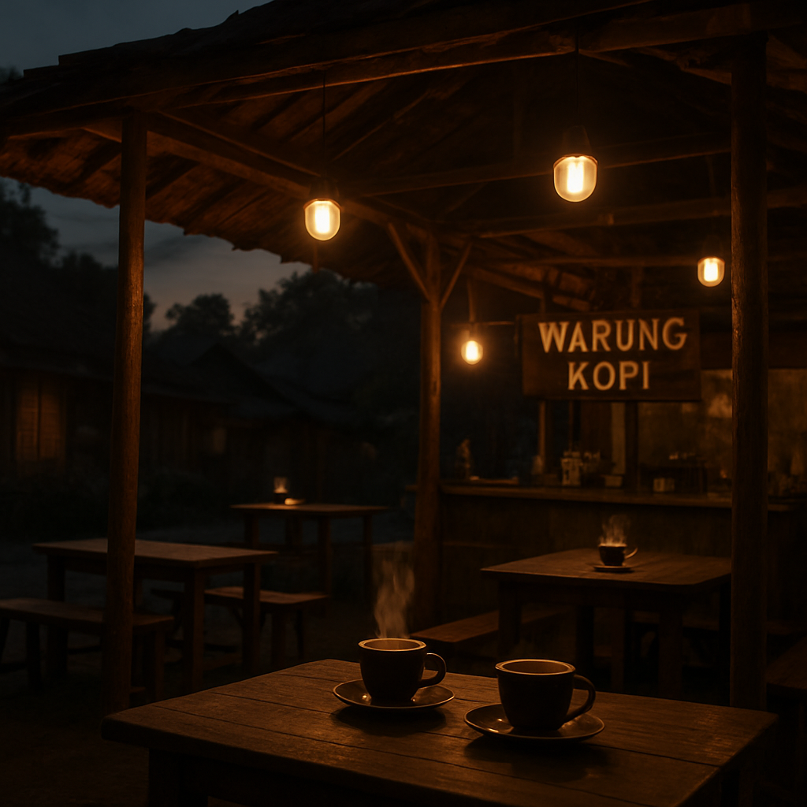
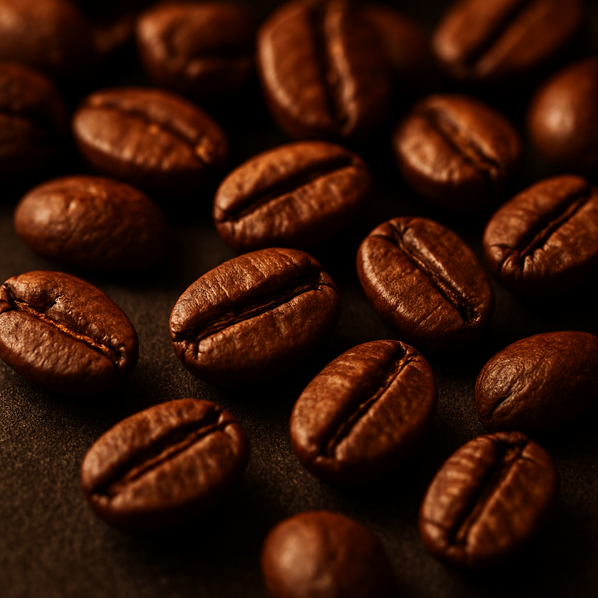
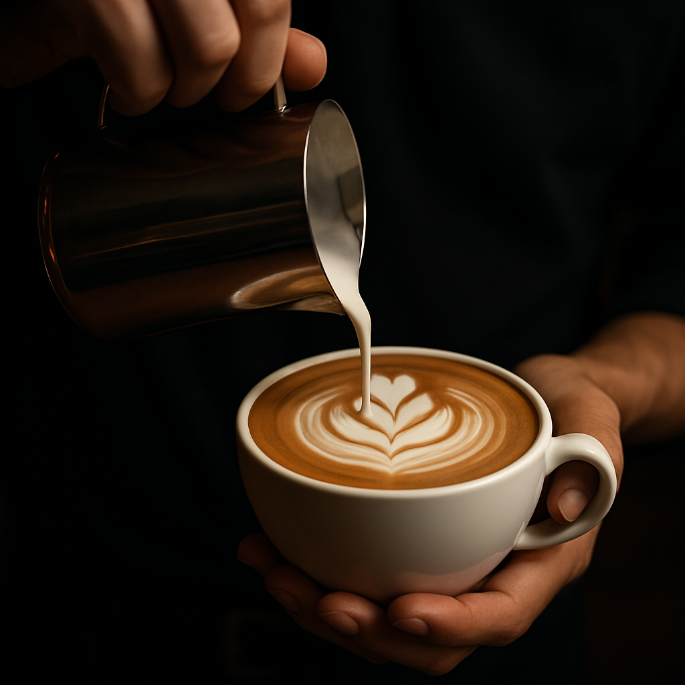
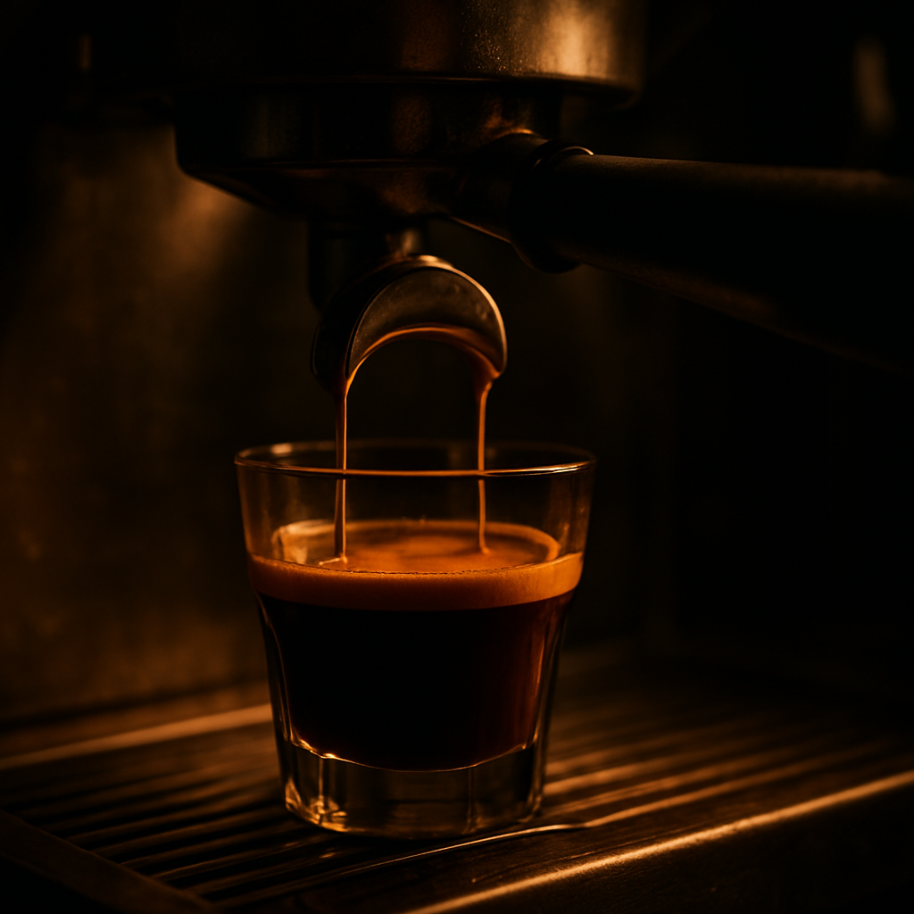

Secangkir Kopi,
Sejuta Cerita
Jonga Kopi hadir sebagai ruang hangat untuk berkumpul, berdiskusi, dan bekerja. Dari tikungan demi tikungan jalan desa, kami menyajikan kopi penuh makna untuk semua kalangan.

Lahir dari Niat Berbagi Manfaat
Jonga Kopi lahir dari semangat sederhana: memanfaatkan aset keluarga agar memberi manfaat bagi masyarakat sekitar. Berawal dari sebidang tanah keluarga yang ingin dijaga kebermanfaatannya, Ustadz Mugo Sasongko menghadirkan Jonga Kopi sebagai ruang berkumpul, berdiskusi, bekerja, dan menikmati kopi dalam suasana hangat dan bersahaja.
Nama "Jonga" terinspirasi dari lokasi warung yang berada di kawasan pedesaan — harus ditempuh melalui tikungan demi tikungan sebelum sampai. Ia merepresentasikan perjalanan, kebersamaan, dan pengalaman menemukan tempat yang nyaman untuk menikmati secangkir kopi.
-
Sebidang Tanah Keluarga
Sebuah aset keluarga yang ingin dijaga agar tetap bermanfaat bagi banyak orang.
-
Gagasan Ustadz Mugo Sasongko
Ide menghadirkan ruang ngopi yang hangat, terjangkau, dan terbuka untuk semua kalangan.
-
Jonga Kopi Resmi Dibuka — 2025
Menjadi rumah kedua bagi pelajar, pekerja, komunitas, hingga wisatawan di Ponorogo.
Sehangat Suasananya
Sekilas potret keseharian di Jonga Kopi — dari biji kopi hingga tawa kebersamaan.



Mengapa Memilih Jonga Kopi?
Lebih dari sekadar kopi — kami menawarkan pengalaman berkumpul yang hangat dan bersahabat.
Harga Terjangkau
Mulai dari Rp2.000 saja. Nikmat kopi tak harus menguras kantong.
Tempat Nyaman
Suasana hangat dan bersahaja, cocok untuk bersantai berlama-lama.
Buka Hingga Dini Hari
Melayani sampai pukul 02.00 WIB untuk para penikmat malam.
Cocok Untuk Nongkrong
Ruang ideal melepas penat bersama teman dan keluarga.
Cocok Untuk Diskusi
Tempat favorit komunitas, mahasiswa, dan pekerja berbagi ide.
Lokasi Strategis
Berada di Mangkujayan, mudah dijangkau dari berbagai penjuru kota.
Temukan Jonga Kopi
-
Alamat
Jalan Banda, Mangkujayan, Ponorogo, Jawa Timur
-
Jam Operasional
Setiap hari · 15.00 – 02.00 WIB
-
WhatsApp
089696541718
Kata Mereka Tentang Kami
Cerita hangat dari para pelanggan setia Jonga Kopi.
Pertanyaan yang Sering Diajukan
Hal-hal yang biasa ditanyakan sebelum berkunjung ke Jonga Kopi.
Yuk, Pesan Kopi Favoritmu Sekarang
Hubungi kami langsung via WhatsApp untuk pemesanan, reservasi tempat, atau sekadar bertanya. Kami siap menyambutmu!
Chat via WhatsAppatau telepon: 089696541718